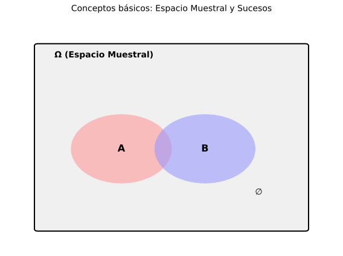

Ejemplos:
| Experimento | ¿Aleatorio? | Justificación |
|---|---|---|
| Lanzar dado | ✓ SÍ | No sabemos qué cara saldrá |
| Soltar piedra | ✗ NO | Siempre cae (determinista) |
| Extraer bola urna | ✓ SÍ | Depende del azar |
| Calentar agua a 100°C | ✗ NO | Siempre hierve |
Tipos de sucesos:

| Símbolo | Significado | Ejemplo |
|---|---|---|
| Ω | Espacio muestral | Ω = {1,2,3,4,5,6} |
| A, B, C... | Sucesos | A = {2,4,6} |
| ∅ | Suceso imposible | ∅ = "sacar 7 en dado" |
| ∈ | Pertenece | 3 ∈ Ω |
| ⊂ | Contenido en | A ⊂ Ω |
Ej 1: Lanzar una moneda dos veces. Describe Ω y los sucesos:
Espacio muestral:
Donde C=cara, X=cruz. Hay 4 resultados posibles.
Suceso A = "Exactamente una cara":
Dos resultados favorables (es suceso compuesto).
Suceso B = "Dos caras":
Un solo resultado (es suceso elemental).
Ej 2 (Contexto Vigo): Experimento: elegir aleatoriamente un estudiante de 1º Bach del IES Teis y observar su medio de transporte al instituto.
a) ¿Es aleatorio?
b) Espacio muestral:
Consideramos todas las opciones de transporte razonables en Vigo.
c) Suceso A:
En Vigo, el transporte público urbano es principalmente autobuses de Vitrasa.
Nota: Si incluyéramos tren (desde zonas más alejadas), A = {Vitrasa, Renfe}
Ej 3: Lanzar un dado y anotar el resultado. Define:
Espacio muestral:
Suceso A = "Múltiplo de 3":
Es suceso compuesto (contiene 2 resultados).
Suceso B = "Mayor que 4":
Es suceso compuesto (contiene 2 resultados).
Ej 4: Extraer dos cartas de una baraja española (40 cartas). ¿Cuántos elementos tiene Ω?
Análisis:
Si importa orden:
(Variaciones sin repetición)
Si NO importa orden:
(Combinaciones - lo más habitual en cartas)
Conclusión: Normalmente, 780 resultados posibles (consideramos no ordenadas).